Model
UMLModel
Untitled
::
Model
Description
none
Diagrams

Main
Properties
Name
Value
name
Model
stereotype
null
visibility
public
importedElements
viewpoint
Owned Elements
Main
«Geo-Boundary»Country
«Geo-Boundary»Region
«Geo-Boundary»City
«Geo-Boundary»Neigorhood
«Geo-Boundary»Census track
«Geo-Boundary»Land Plots
«Geo-Boundary»Zoning
«Geo»Road Network
Agent
Solid Waste Managment
«Geo»Location
«Geo»Container
«Agent Role»Transportation
«Abstract»Public
«Agent Role»Generation
«Agent Role»Usage
«Agent Role»Transformation
«Agent Role»Storage
Geo-Bounderies
Geo-Bounderies*
Waste
Recovery Process
Resource
Agent father
Residential
Construction & demolition
«Geo»Road Link
SWM Agency
Transaction log
Process and industrial
«Geo»Transport Route
Road Usage
Class1
Vehicle
Fleet
Waste regulation
service
Container event
Road Network
Other SocioEconomic data
Built Environment
Class2
«Agent category1»Individual
«Agent category1»Collective
«Agent category2»Human
«Agent category2»Non-human
«Agent category2»Physical